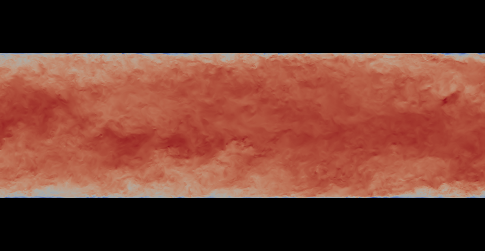
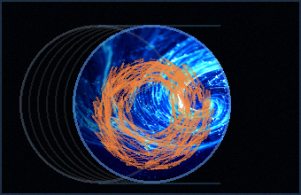
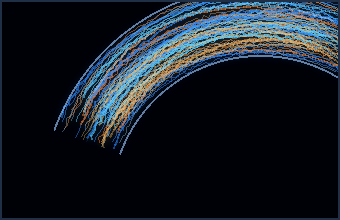
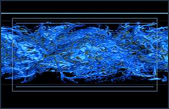
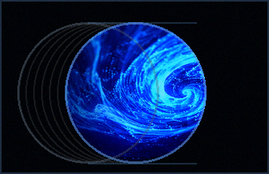

Compressible
Channel Flow
High-speed compressible turbulent channel flow at various Mach numbers.
View DatasetBrowse our curated collection of open turbulence datasets.

High-speed compressible turbulent channel flow at various Mach numbers.
View Dataset
Compressible turbulent flow in a circular pipe across a range of Mach numbers.
View Dataset
Compressible turbulent flow in a curved channel with different curvature ratios.
View Dataset
Incompressible turbulent channel flow at multiple friction Reynolds numbers.
View Dataset
Incompressible turbulent flow in a circular pipe across a wide range of Reynolds numbers.
View Dataset